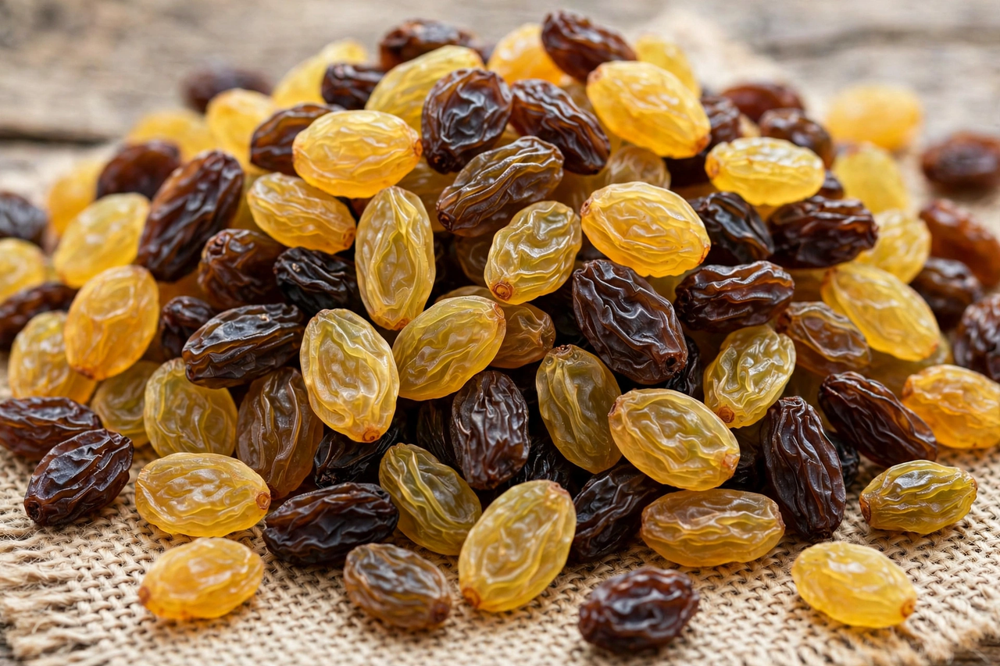

Raisin

Type: Dried fruit
Source: Grapes (Vitis vinifera)
Main producers: United States, Turkey, Iran, China
A raisin is a dried grape. Raisins are produced in many regions of the world and may be eaten raw or used in cooking, baking and brewing. Dried grapes have been produced since ancient times — raisins are mentioned in Greek and Roman sources and were valued as a portable, non-perishable sweet food.
Production
Raisins are traditionally dried in the sun, either on the vine (as with the "paper tray" method in California's San Joaquin Valley, where bunches dry on paper between vine rows) or on racks. Modern production also uses mechanical dehydrators, sometimes after dipping the grapes in an alkaline solution or sulphur treatment to speed drying and preserve colour. Golden raisins are treated with sulphur dioxide; dark raisins are untreated and sun-dried. It takes roughly four kilograms of fresh grapes to make one kilogram of raisins.
Varieties and related fruits
The main raisin grape is the Thompson Seedless (Sultana). Other dried vine fruits include currants (from the small Black Corinth grape) and sultanas, terms whose meanings vary by country. Raisins differ from the prune, which is a dried plum.
Nutrition and uses
Raisins are about 60% sugars, mainly glucose and fructose, and provide fibre, potassium, iron and boron. They are used in breakfast cereals, trail mixes, baked goods such as fruitcake and hot cross buns, and in savoury dishes in Middle Eastern and Indian cooking. Raisins and grapes are toxic to dogs and can cause kidney failure.